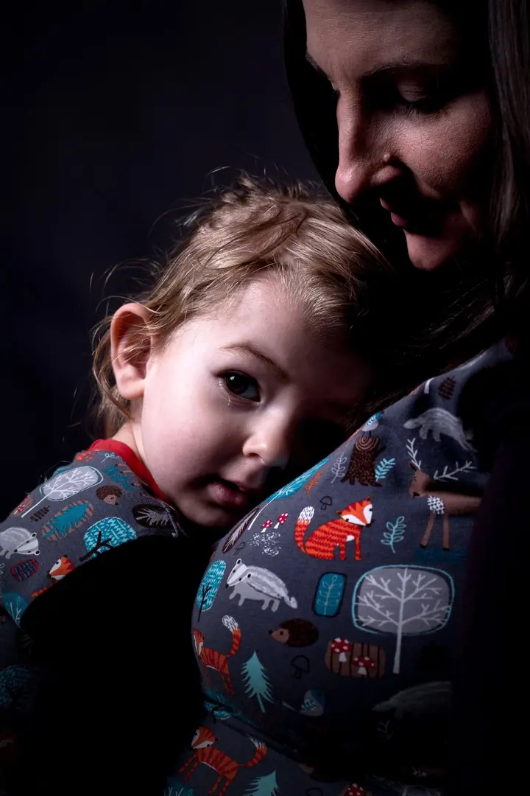
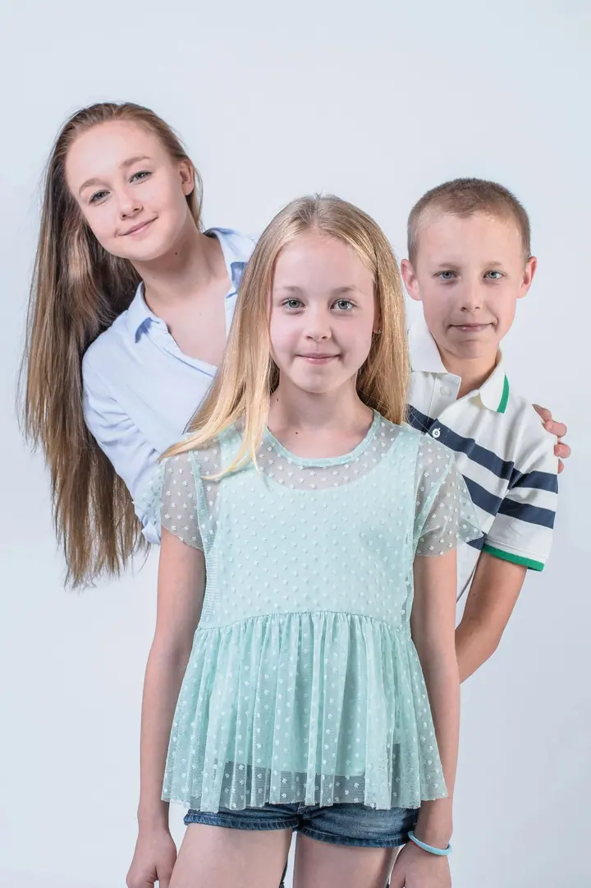
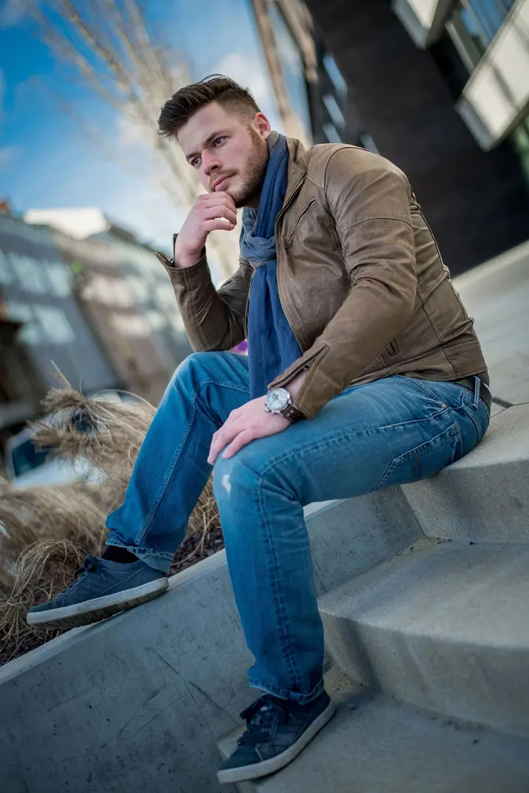

01 / 04
Rodinná, dětská a těhotenská fotografie
Hodina focení venku, při které se můžete chovat přirozeně a být sami sebou. Dostanete 10 upravených fotografií v plném rozlišení a další si můžete vybrat z online náhledů.
Zeptat se na termín→




Rodinné fotky, ke kterým se budete vracet
Zeptat se na termín →(01) Ahoj
Jmenuji se Lukáš Juračka a jsem rodinný a portrétní fotograf . Fotím rodiny s dětmi , páry, svatby i portréty v Brně a okolí, v Kraji Vysočina i v celém Jihomoravském kraji .
(02) Co fotím
01 / 04
Hodina focení venku, při které se můžete chovat přirozeně a být sami sebou. Dostanete 10 upravených fotografií v plném rozlišení a další si můžete vybrat z online náhledů.
Zeptat se na termín→02 / 04
Portréty v exteriéru, ve městě nebo v ateliéru v Brně-Bosonohách. Hodí se pro vás osobně i pro vaši firmu.
Zeptat se na termín→03 / 04
Balíček Mini zahrnuje obřad, skupinky a portréty. Balíček Standard pokryje celý den, od ranních příprav až do večera.
Zeptat se na termín→Dále nabízím
Společné focení pro dva, klidně a bez strojeného pózování. Jde mi o vztah, blízkost a pohledy, které patří jen vám.
↗(04) Postup
Od první zprávy po hotovou galerii.
Krok 1 z 4
Ve formuláři na webu si vyberete typ focení a jeden z volných termínů. Rezervace je závazná, jakmile vám termín potvrdím e-mailem.
Krok 2 z 4
Sejdeme se venku nebo v ateliéru v Bosonohách. Nikam nespěcháme a necháme prostor tomu, co se mezi vámi přirozeně děje.
Krok 3 z 4
Pošlu vám online náhledy a vy si v klidu z pohodlí domova vyberete fotky, které chcete upravit.
Krok 4 z 4
Upravené fotografie vám pošlu elektronicky v plném rozlišení. Vybrané snímky si můžete nechat i vytisknout.
Takové chvíle trvají jen okamžik, na fotografii zůstanou navždy.
(05) Za objektivem
K fotografii jsem se dostal už na střední škole. Nejdřív mě okouzlila krajina: její světlo, ticho a to, jak se každou chvíli mění. Díky hodinám venku s fotoaparátem jsem se naučil vnímat detaily, být trpělivý a pracovat s přirozeným světlem. Časem mi ale v krajině začal chybět člověk, jeho emoce, dotek, pohled a příběh.
Právě příběhy lidí mě přivedly k portrétní a rodinné fotografii. Baví mě zachycovat vztahy, blízkost a nenápadné okamžiky, jako je úsměv dítěte nebo tiché objetí. Každé focení je pro mě setkání a projev důvěry. Proto se snažím, abyste se u něj cítili přirozeně a mohli být sami sebou.
Kromě rodin a portrétů fotím také svatby, reportáže a produkty. Mám ateliér v Brně-Bosonohách, ale rád za vámi přijedu i ven, do Brna a okolí nebo na Vysočinu.
Lukáš
Lukáš Juračka · Rodinný a portrétní fotograf
Nejčastěji v Brně a okolí, v Kraji Vysočina a v Jihomoravském kraji. Ateliér mám na adrese Pražská 156 v Brně-Bosonohách. Za dopravu na delší vzdálenost účtuji 9 Kč za kilometr.
Rodinné focení zahrnuje 10 upravených fotografií. Každá další stojí podle počtu 50 až 80 Kč. Ze svatby Mini dostanete nejméně 200 fotografií, ze svatby Standard nejméně 500.
Rodinné, dětské nebo těhotenské focení v exteriéru stojí 2 999 Kč. V ceně je hodina focení, 10 upravených fotografií, výběr z online náhledů a elektronické zaslání.
Ano, vizážistku vám mohu domluvit od 649 Kč. Vybrané fotografie vám také rád nechám vytisknout.
(07) Kontakt
Napište pár vět o tom, co si představujete, a termín, který se vám hodí.